Strokes Gained. Strokes Gained.
Track your round shot by shot and see exactly where you gain and lose strokes, off the tee, on approach, around the green and on the putting surface. Based on Broadie's Strokes Gained model, tuned to your handicap. Houd je ronde slag voor slag bij en zie precies waar je slagen wint en verliest: vanaf de tee, op de approach, rond de green en met putten. Gebaseerd op het Strokes Gained-model van Broadie, afgestemd op jouw handicap.
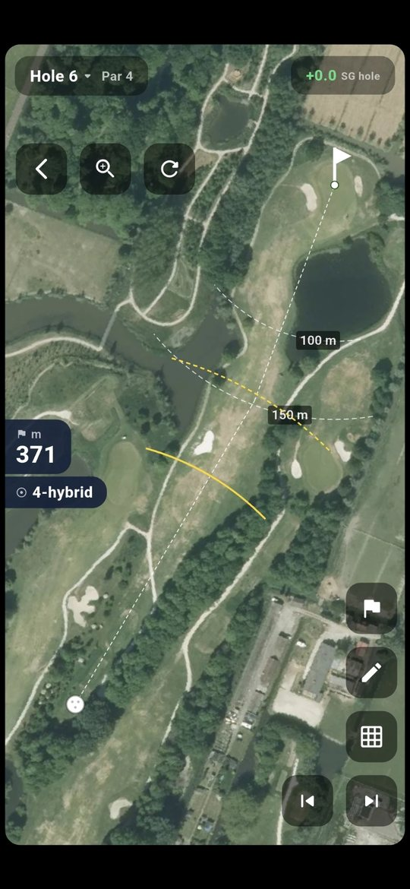
New this autumnNieuw dit najaar
Less fiddling. More golf.Minder gepriegel. Meer golf.
- ⬛Score on the black screenScore op het zwarte schermThe battery saver shows the hole, the distance to the green and the numbers 1–9. Tap your score and the app jumps to the next hole. The pencil opens the full score entry.De batterijspaarstand toont de hole, de afstand tot de green en de cijfers 1–9. Tik je score en de app springt naar de volgende hole. Het potlood opent de volledige invoer.
- ⌖Viewfinder on the mapZoeker op de kaartSlide the map until the cross is on your ball and tap “Ball here”. The distance to the green shows right under it.Schuif de kaart tot het kruis op je bal staat en tik op “Bal hier”. De afstand tot de green staat er direct onder.
- ⛳Putt panelPutt-paneelOn the green, pick the first-putt distance (1 to 20 m, or feet) and tap the number of putts. Done.Op de green kies je de afstand van de eerste putt (1 tot 20 m, of feet) en tik je het aantal putts. Klaar.
- 📍Your course, found for youJe baan, vanzelf gevondenTap the course name and the six nearest courses appear, with distance. On 27-hole courses you pick which two nines you play.Tik op de baannaam en de zes dichtstbijzijnde banen verschijnen, met afstand. Op 27-holes banen kies je welke twee lussen je speelt.
- 🌬️Wind and GPS quality at a glanceWind en GPS-kwaliteit in één oogopslagA wind needle on the hole map, and a GPS dot that turns blue, yellow or red, with an accuracy circle.Een windnaald op de holekaart, en een GPS-stip die blauw, geel of rood kleurt, met een nauwkeurigheidscirkel.
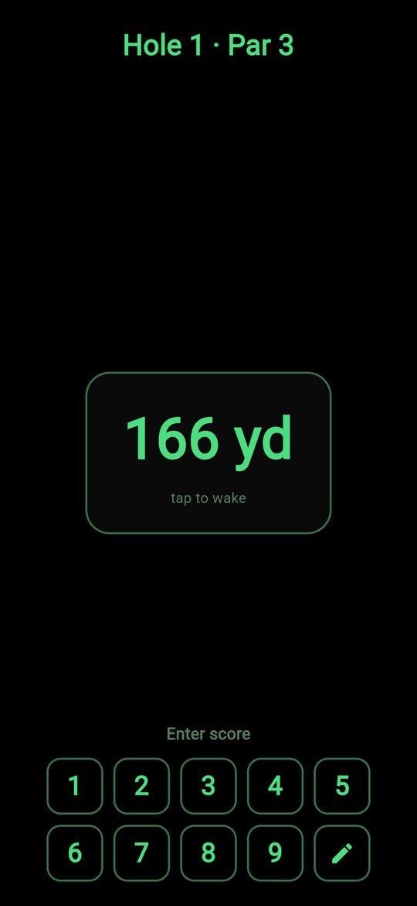
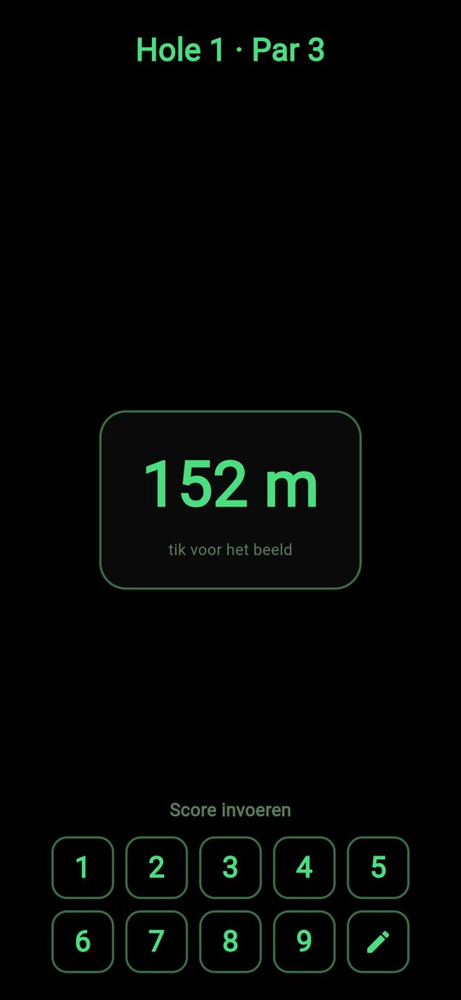
What's insideWat zit erin
Everything you need.
Nothing you don't.
Alles wat je nodig hebt.
Niets wat je niet nodig hebt.
The statistics tour pros use, made simple enough to log on the course. De statistieken die tourspelers gebruiken, simpel genoeg om op de baan bij te houden.
Target-zone calculatorDoelzone-calculator
Pick your lie and distance and see your expected strokes and which zone to aim for.Kies je ligging en afstand en zie je verwachte aantal slagen en op welke zone je moet mikken.
GPS round trackerGPS-rondetracker
Log every shot hole by hole. GPS measures the distances; a putt panel handles the green.Leg elke slag per hole vast. GPS meet de afstanden; een putt-paneel regelt de green.
Bird's-eye viewBirdseye view
The hole from above with your shots plotted. Opens by itself at the tee; log shots with the viewfinder.De hole van bovenaf met je slagen erop. Opent vanzelf op de tee; leg slagen vast met de zoeker.
Four SG categoriesVier SG-categorieën
Tee, approach, short game and putting, each compared with players of your handicap.Tee, approach, korte spel en putten, elk vergeleken met spelers van jouw handicap.
Progress over timeVoortgang door de tijd
Charts and stats across all your rounds show what's improving and what isn't.Grafieken en statistieken over al je rondes laten zien wat beter gaat en wat niet.
Club distancesClubafstanden
Tag your clubs and get trimmed average and longest distances per club.Tag je clubs en krijg per club een gecorrigeerde gemiddelde en langste afstand.
Course handicapBaanhandicap
Look up your playing handicap for courses in the Netherlands and Scotland.Zoek je baanhandicap op voor banen in Nederland en Schotland.
AI practice adviceAI-trainingsadvies
Optional: get prioritised practice tips based on your numbers, using your own Claude API key.Optioneel: krijg trainingstips op volgorde van prioriteit op basis van je cijfers, met je eigen Claude API-sleutel.
Your data, your choiceJouw data, jouw keuze
Sign in with Google to keep rounds and courses online on every device, or keep everything on your phone. Export any time.Log in met Google om rondes en banen online op elk toestel te hebben, of houd alles op je telefoon. Exporteren kan altijd.
Battery saverBatterijspaarstand
After 15 seconds without a touch the screen goes black: hole, distance to the green and score buttons. Tap to wake. Switch it off in More → Battery.Na 15 seconden zonder aanraking wordt het scherm zwart: hole, afstand tot de green en scoreknoppen. Tik om het beeld terug te krijgen. Uitzetten kan in Meer → Batterij.
Wind on the holeWind op de hole
Current wind speed and direction on the hole map, in Beaufort, m/s or mph.Actuele windsnelheid en -richting op de holekaart, in Beaufort, m/s of mph.
Thousands of coursesDuizenden banen
Over 5,000 courses worldwide with GPS for every tee and green. The list updates itself when courses are added.Ruim 5.000 banen wereldwijd met GPS voor elke tee en green. De lijst werkt zichzelf bij als er banen bijkomen.
Search the course list →Zoek in de banenlijst →See it in actionZie het in actie
Real screens, real rounds.Echte schermen, echte rondes.
Screenshots from the app with 40 demo rounds loaded. Schermafbeeldingen uit de app met 40 demorondes geladen.
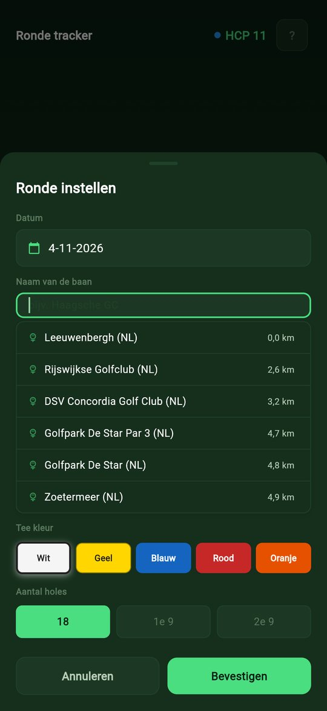
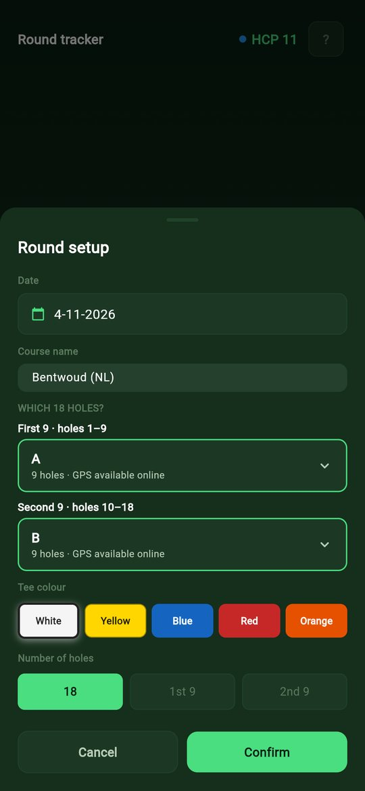
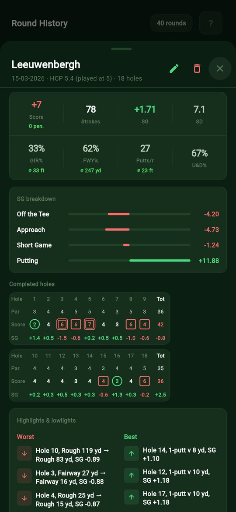
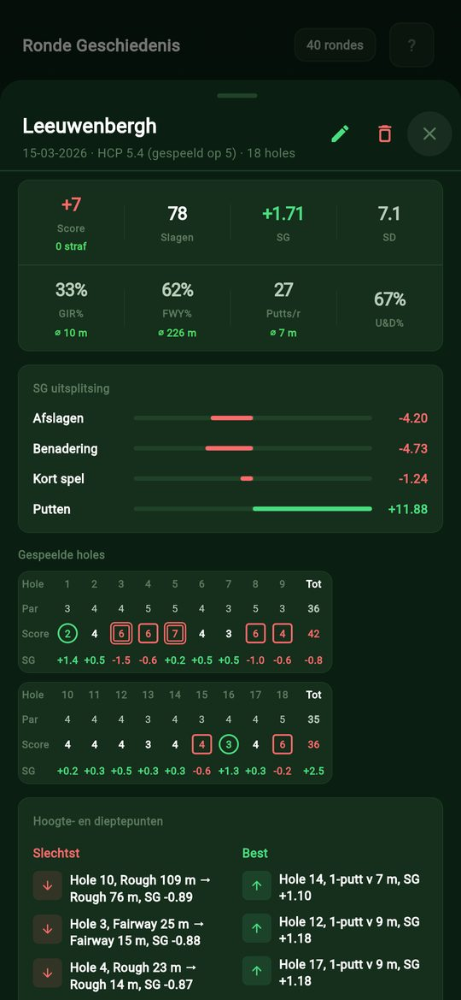
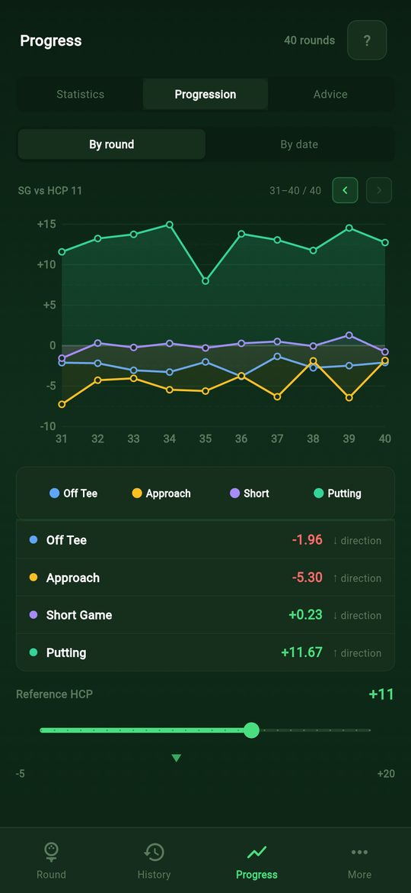
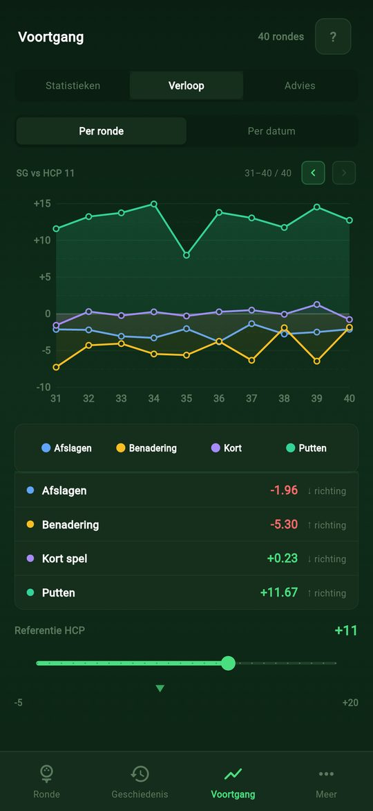
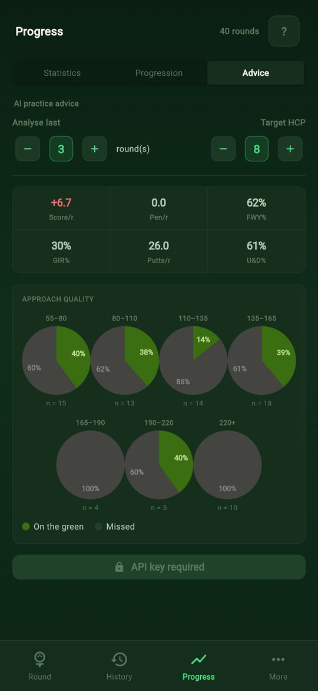
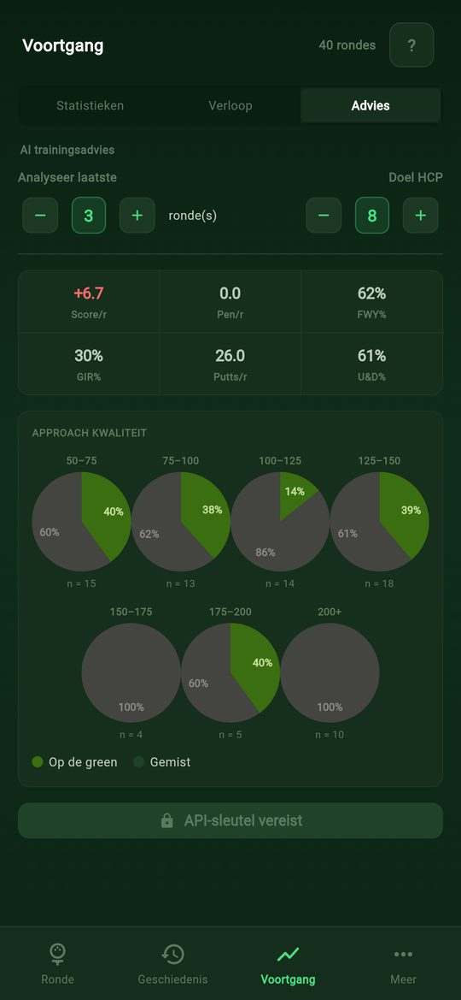
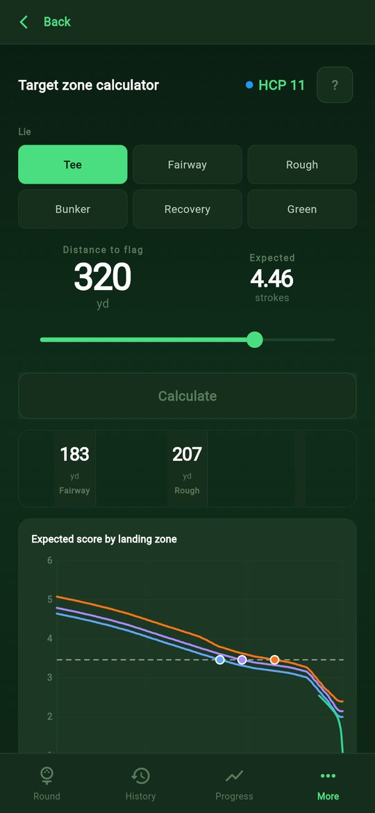
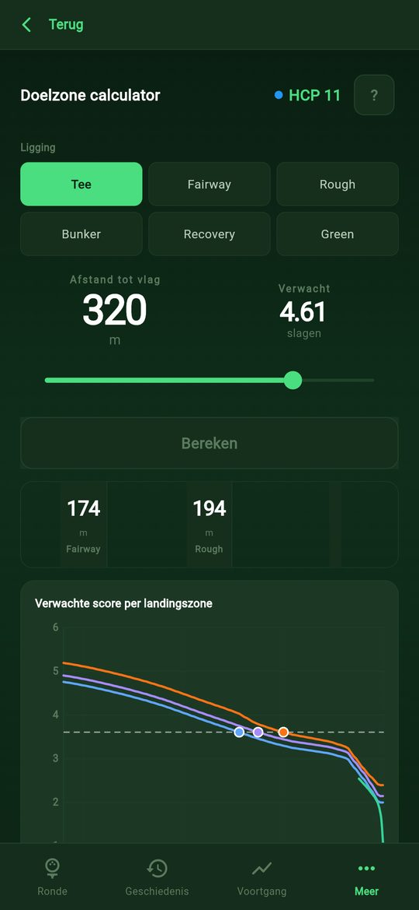
Simple by designSimpel ontworpen
Play in 3 steps.Spelen in 3 stappen.
Pick your courseKies je baan
Nearby courses appear by themselves. Pick your tee, and on a 27-hole course your two nines.Banen in de buurt verschijnen vanzelf. Kies je tee, en op een 27-holes baan je twee lussen.
Log each shotLeg elke slag vast
Put the viewfinder on your ball, or just tap your score on the black screen. GPS fills in the distances.Zet de zoeker op je bal, of tik gewoon je score op het zwarte scherm. GPS vult de afstanden in.
See what to practiseZie wat je moet trainen
Your round summary shows strokes gained per category plus your best and worst shots of the day.Je rondeoverzicht toont strokes gained per categorie plus je beste en slechtste slagen van de dag.
CoursesBanen
Your course is probably already there.Jouw baan staat er waarschijnlijk al in.
And if it isn't, you add it yourself in a few minutes.En zo niet, dan zet je hem er in een paar minuten zelf in.
The course listDe banenlijst
Courses worldwide with GPS for every tee, green and dogleg.Banen wereldwijd met GPS voor elke tee, green en dogleg.
- Downloaded when you start a round, so the app stays small.Gedownload als je een ronde start, zodat de app klein blijft.
- Updates itself: new and improved courses arrive automatically.Werkt zichzelf bij: nieuwe en verbeterde banen komen vanzelf binnen.
- 27-hole courses with each loop separately.27-holes banen met elke lus apart.
The Course MapperDe baan-mapper
Click the tee, the middle of the green and any dogleg of every hole on a satellite map. Works best on a computer.Klik per hole de tee, het midden van de green en eventueel de dogleg aan op een satellietkaart. Werkt het fijnst op een computer.
- Orange dots show every course already in the list; click one to open and improve it.Oranje puntjes tonen alle banen die al in de lijst staan; klik er een aan om hem te openen en te verbeteren.
- 18 holes, 9 holes, or several loops for 27+ holes.18 holes, 9 holes, of meerdere lussen voor 27+ holes.
- Scan the QR code with the app (More → GPS coordinates), or download the CSV.Scan de QR-code met de app (Meer → GPS-coördinaten), of download de CSV.
- Share with the developer and your course is added to the list for everyone.Deel met de ontwikkelaar en je baan komt in de lijst voor iedereen.
Who it's forVoor wie
Built for every golfer.Gemaakt voor elke golfer.
BeginnersBeginners
Find out early which part of your game costs the most strokes, and start there.Ontdek vroeg welk deel van je spel de meeste slagen kost, en begin daar.
Club golfersClubgolfers
Stop guessing. See if it's really your putting, or those approach shots from 120 metres.Stop met gokken. Zie of het echt je putten is, of die approach van 120 meter.
Low handicappersLage handicappers
Fine-tune with GIR by distance band, club distances and up-and-down percentages.Verfijn met GIR per afstandsband, clubafstanden en up-and-down-percentages.
Got questions?Vragen?
Frequently asked questions.Veelgestelde vragen.
What is Strokes Gained?Wat is Strokes Gained?
A way to measure each shot against how many strokes a player of your level would normally need from that spot. Gain strokes and your number goes up; lose them and it goes down. It's the method Mark Broadie developed and the PGA Tour uses.Een manier om elke slag te vergelijken met hoeveel slagen een speler van jouw niveau normaal nodig heeft vanaf die plek. Win je slagen, dan gaat je getal omhoog; verlies je ze, dan omlaag. Het is de methode die Mark Broadie ontwikkelde en die de PGA Tour gebruikt.
Is it free?Is het gratis?
Yes. The optional AI advice uses your own Claude API key, which Anthropic bills you for directly.Ja. Het optionele AI-advies gebruikt je eigen Claude API-sleutel; die rekent Anthropic rechtstreeks met je af.
Do I need an account?Heb ik een account nodig?
No. When you first open the app you choose: sign in with Google, so your rounds and courses are kept online and available on every device, or use it locally without an account. You can switch later under More → Account. Using it locally? Export your rounds now and then, because they are gone if you remove the app.Nee. Bij de eerste start kies je: inloggen met Google, zodat je rondes en banen online bewaard blijven en op elk toestel beschikbaar zijn, of lokaal gebruiken zonder account. Wisselen kan later via Meer → Account. Gebruik je hem lokaal? Exporteer je rondes dan af en toe, want ze zijn weg als je de app verwijdert.
How do I install the APK?Hoe installeer ik de APK?
Open the download on your Android phone and tap the file. Android asks once to allow installs from your browser; allow it and tap Install. To update, download the new APK and install it over the old one; your rounds are kept.Open de download op je Android-telefoon en tik op het bestand. Android vraagt één keer of je installaties vanuit je browser toestaat; sta dat toe en tik op Installeren. Voor een update download je de nieuwe APK en installeer je die over de oude heen; je rondes blijven bewaard.
Can I use it on iPhone?Werkt het op iPhone?
Yes, in Safari. Add it to your home screen (Share → Add to Home Screen) and sign in, so your rounds are kept when Safari closes.Ja, in Safari. Zet het op je beginscherm (Delen → Zet op beginscherm) en log in, zodat je rondes bewaard blijven als Safari sluit.
Metres or yards?Meters of yards?
Both. Switch to yards and feet in the settings.Allebei. Schakel in de instellingen over naar yards en feet.
My course has no GPS coordinates. Now what?Mijn baan heeft geen GPS-coördinaten. Wat nu?
First check the course list: over 5,000 courses are ready to use. Not there? Map it yourself with the Course Mapper: search for your course, click the tee, the middle of the green and any dogleg of every hole, and tap Send to app. In the app, go to More → GPS coordinates → Scan QR code and point your phone at the screen. Tap Share with the developer as well, and the course is added to the list for every player.Kijk eerst in de banenlijst: ruim 5.000 banen staan klaar. Staat hij er niet bij? Map hem zelf met de baan-mapper: zoek je baan op, klik per hole de tee, het midden van de green en eventueel de dogleg aan en klik op Naar de app. Ga in de app naar Meer → GPS-coördinaten → QR-code scannen en richt je telefoon op het scherm. Klik ook op Deel met de ontwikkelaar, dan komt de baan in de lijst voor iedereen.
The GPS of a course is a bit off. Can I fix it?De GPS van een baan klopt niet helemaal. Kan ik dat verbeteren?
Yes. On the course, move the tee or green with the icons on the right of the map. For the whole course, open it in the Course Mapper (click its orange dot), drag the pins to the right place and share it with the developer, so everyone gets the better version.Ja. Op de baan verschuif je de tee of green met de icoontjes rechts op de kaart. Voor de hele baan open je hem in de baan-mapper (klik op het oranje puntje), sleep de punten naar de juiste plek en deel hem met de ontwikkelaar, zodat iedereen de betere versie krijgt.
Which languages?Welke talen?
The app is in English and Dutch. The built-in help is also available in German, French and Spanish.De app is in het Nederlands en Engels. De ingebouwde hulp is er ook in het Duits, Frans en Spaans.
What happens to my location?Wat gebeurt er met mijn locatie?
GPS is used on your device to measure shot distances. Your coordinates are not stored in your rounds or sent to us. See the privacy policy for details.GPS wordt op je toestel gebruikt om slagafstanden te meten. Je coördinaten worden niet in je rondes opgeslagen en niet naar ons gestuurd. Zie het privacybeleid voor details.